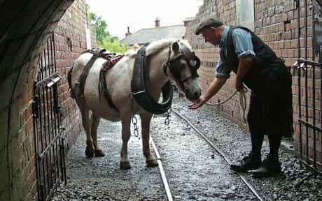
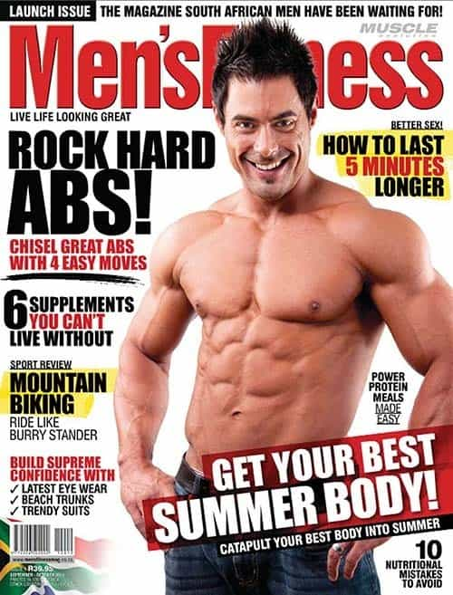

< < < Back
Once A Woman’s Body Is Ruined, There’s No Getting It Back – Return Of Kings
When a muffin-topped, beer-bellied, small-assed, late twenties English woman says she’s going to “get in shape,” my heart sinks. When a pencil-armed, pot-bellied thirty-five-year-old man says similar, well, I’m skeptical, but I know this for sure: he may possibly succeed but she never will.
Here is the shocking truth: the women I’ve met with the best bodies have never stepped foot in a gym, nor gone on a diet in their lives. The men with the best bodies have spreadsheets to track their diets and work like Spartans in the weights room.
Men and women’s bodies are as different as their minds.
Women are piglets
Say you wish to produce a prize pig. What you cannot do is take a fully grown sub-standard adult pig and then make changes to its diet and lifestyle, increase its feed quality, let it run about outside more, etc, then expect it to win the next year’s Cumberland Swine Festival gold medal.
No, what you must do is start your work with a piglet. You must feed it very high quality food, being careful to give it plenty of good fats and vitamins and ensure it does not under nor over eat. You must keep it free of toxins and pollutants and let it run around a lot in the fresh air. With careful rearing over the years the piglet’s body forms correctly: the balance of fat to muscle resulting in a supreme, prize-winning specimen.
Women are effectively the same. You cannot feed a woman crap and let the years pass then suddenly reverse this process: the damage is already done. The quality and disposition of the fat on her body has already been determined. No diet in the world will move fat from a belly into a buttock, or from a muffin-top into a breast.
Fat levels and fat disposition (location) is set during the rearing phase of her life. Gaining a low body fat does not necessarily result in a good figure. Check out these pictures. I know which ones I prefer:

Kelly Brook: fat but still do-able.
Female bodybuilder: gross.
Most definitely fat: most definitely hot.
As we all know, a good female body is an exercise in subtlety. Thin here, curvy there, firm and powerful there, soft and smooth there.
Luckily for us mother nature has made it remarkably easy for the majority (say two thirds) of women to crack this puzzle and have a body which grown men would climb mountains just to penetrate. They just have to be raised right, like a piglet, and not fuck it up.
We have seen the proof
Curious players traveling in Eastern Europe, Russia, and Asia bear witness to this on a daily basis. The streets are thronged with beauties. I’ve met few of these girls that actually go to the gym or “diet” in any specific way, but they have physiques that modern English women can only weep at. Why? Because Piglet Theory has been applied to them correctly.
They have been raised with good, wholesome food, not under or over-fed and not been allowed to indulge in silly diets. Importantly, they’ve been brought up to take care of themselves, have self respect as a woman and not engage in the squalor of their urges – meaning the regular fetishising of junk food and alcohol and the gluttonous pig-outs that their Anglo sisters debase their femininity and genetic gift from nature with on a weekly basis.
Additionally, a high amount of low intensity activity features in these girl’s lives. They like to walk everywhere, understanding that it “helps their figures” and you’ll find a lot of them did some form of dance in their formative years. Most importantly, virtually all of them barely drink and consume probably less than 10% of the alcohol their debauched Western sisters do.
On the other hand, let us consider Anglo piglets: by and large badly reared. Drive around an average British town and take a look at the girls under sixteen. Quite a lot of slim, pretty ones aren’t there? Now repeat this exercise for twenty year olds. WHERE DID THEY ALL GO?
The sad truth is that most British people shovel poor quality slop into their mouths from the day they develop the motor-control neccessary to do so. When parental control is diminished at age sixteen this process escalates quickly. Girls start guzzling booze and eating junk food and within a few years their precious, fragile gift from nature is ruined. Add three years of college onto this: living off cheap, poor quality food and regular tri-weekly binge drinking and their free gift from nature is gone forever.
Men Are Pit Ponies

Post-workout nutrition.
Men have it slightly easier. Assuming a guy has reasonable proportions then what gives him a good body is very simple: having less body fat and more muscle. A man does not have to concern himself with where on his body the fat is located, he just needs to remove it. He doesn’t have to concern himself with looking “too buff” or “too skinny,” he just needs to get jacked and ripped.
Men are just like pit ponies. You can take the laziest, most overfed pony and stick it down a mine pulling carts on a daily basis. In a few months it’ll be ripped and jacked: all it needs is hard toil and a strict diet.
Alcohol, whilst certainly bad for men, doesn’t have the devastating effect on them that it does for women. Similarly, with their higher metabolic rates and far higher activity levels (don’t believe the surveys) men deal with caloric excess better than women.
Young Anglo women are living the lie that they are not only mentally male, but physically as well, and nobody seems to be telling them that their bodies simply cannot process this level of abuse. Men’s bodies are Toyota pickups: women’s are Ferraris.
The Arms Race
It’s not all great for men. Answer me this: many men do you think that without dieting or exercising in any intense fashion could grace the cover of Men’s Health? The answer is probably far, far lower than 1%. Why? Because men are now caught in a figurative and literal arms race in terms of physique.
Taking steroids makes a man more ripped and jacked, and thus in a few short years unless you’re taking gear you simply do not have the look that these publications require. Go to an average bar in an average city in the UK. The average guy now dedicatedly lifts weights three times a week and monitors his diet closely.

Regular walking, salsa, fresh air and home-cooked food. Easy.
As feminism causes women’s SMV to plummet en-masse and men must resign themselves to dating down, women can buy a lot more in the marketplace for their money. Men, trapped into vicious competition for the ever-dwindling supply of women who are not fatter and more bossy than their mothers were (post childbirth) now look for any edge over each other. Pecs have to be pumped, hair has to be perfect.
It’s also to do with the feminization of men. Classic, society-building male attributes, such as intelligence, wisdom, and character are now valued less by society and men are valued more and more solely on their physicality.
In ten years the average twenty-year old male will take steroids.
And for women?
There is no chemical arms race for women. Steroids and drugs do not make a woman’s body more feminine.
The truth that will have most bloated UK fem-whales screaming in denial is that in countries that understand Piglet Theory, the average girl could, with a little bit of makeup and fake tan, grace the cover of a fitness magazine.
In Russia and Prague the average girl has a flat stomach, no love-handles, a round backside and slender, toned limbs. Oh… and no tattoos. Incidentally, I like to consider tattoos equivalent to swine-markings: identifying the lower quality porkers destined for the pet food factory.
Conclusion
Men and women’s bodies have a direct parallel to male and female SMV: they are an illustration of inherent versus earned value. Women have evolved to have inherent value: they have a belly-full of ripe eggs and in their twenties men relentlessly compete to fertilize them. A twenty-something girl knows attention and dating options equivalent to a male rock star.
All a woman has to do to be successful is not fuck it up, don’t waste too much time and ensure that well before her best-before date of thirty she’s picked a man. Their bodies are the same: they are born with the raw material, most of them, to be wildly attractive to men: they just have to not fuck it up and if they do, there’s nothing that can be done to salvage the situation.
And for men? Relentless competition with other men, but mitigated by the fact that their value for the most part can be built and worked for, rather than given by mother nature as a fixed sum. For now, the best thing a man can do is to go somewhere where piglets are reared well.
Read More: 10 Reasons Why Foreign Women Are Better Than American Women


{kind=link}